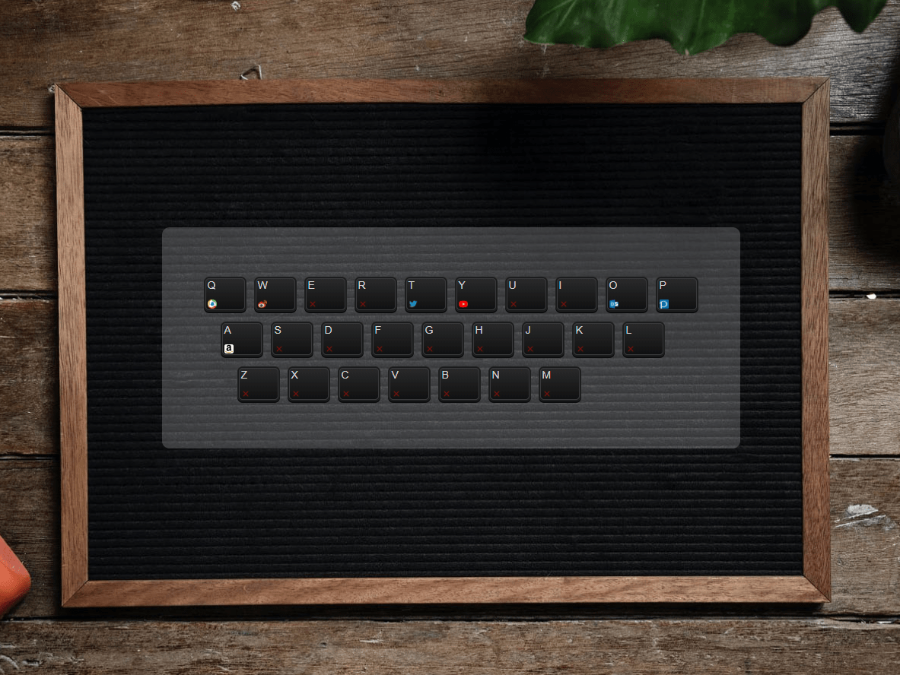
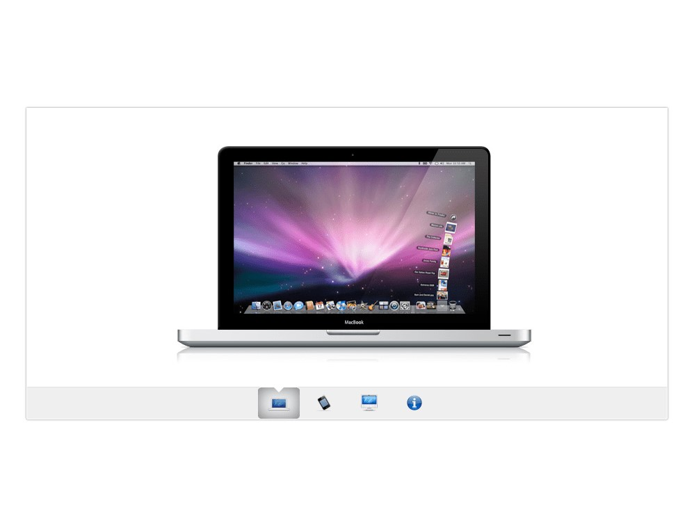
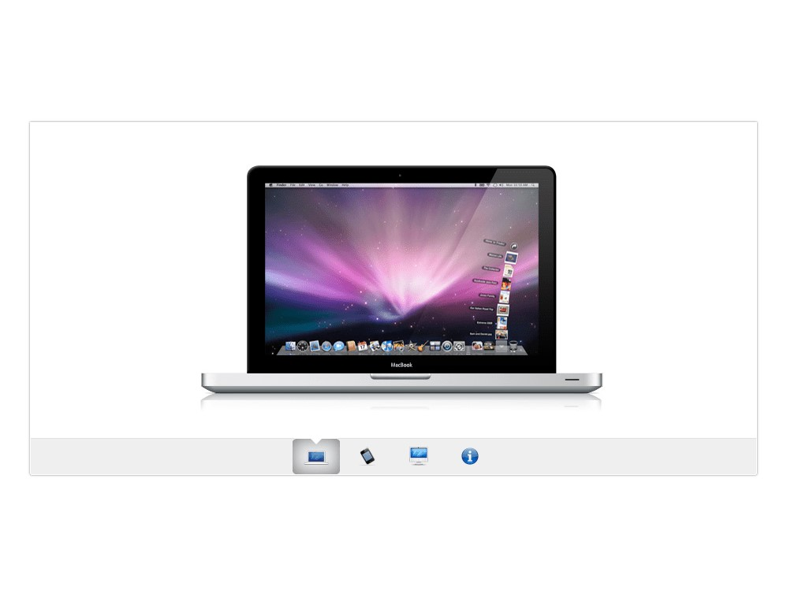
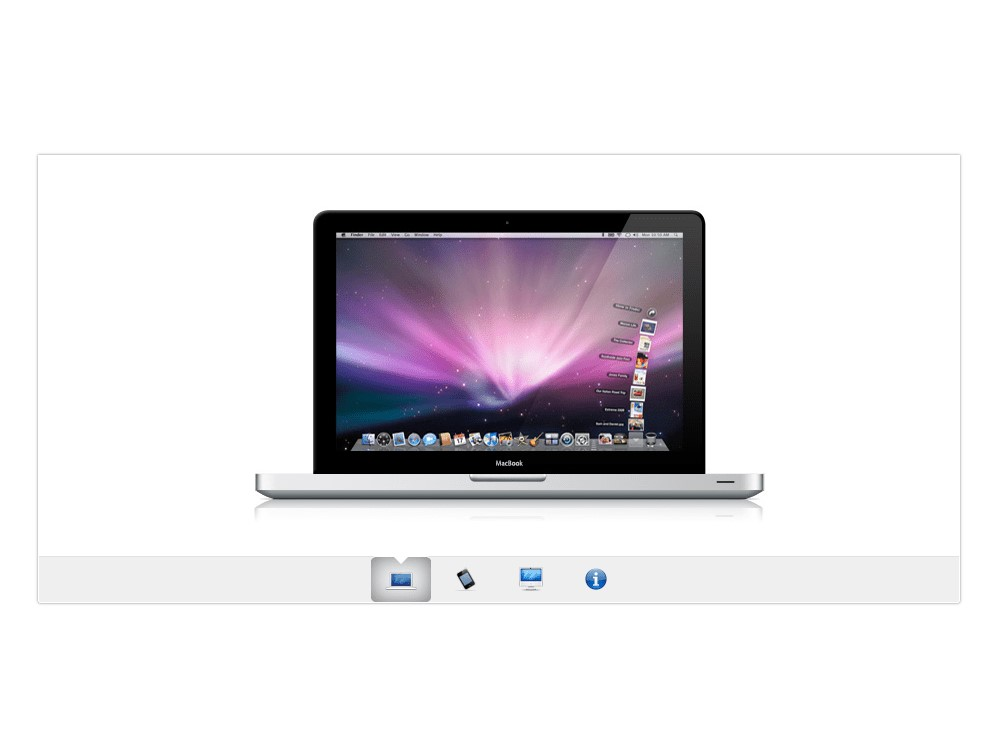

RS
card
关于
技能
作品
作品1
作品2
作品3
博客
博客1
博客2
博客3
日历
联系方式
其它
Hello
凌号
前端菜鸟
年龄
22
所在城市
上海
邮箱
zerolhao@foxmail.com
手机
18355372562
下载 PDF 简历
凌号，前端菜鸟一个，目前正于饥人谷学习中。
技能
HTML 5 & CSS 3
JavaScript
jQuery
Vue.js
React
HTTP
作品集


 
